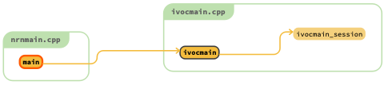
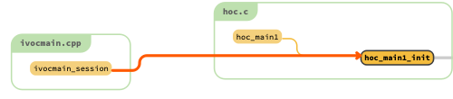
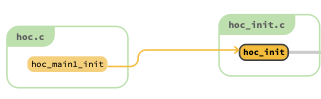
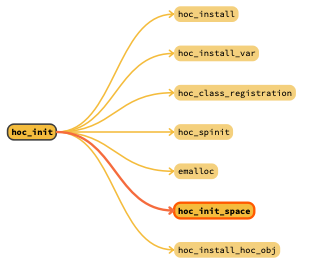
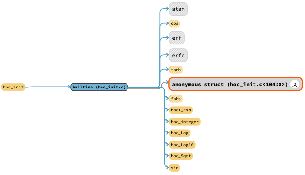
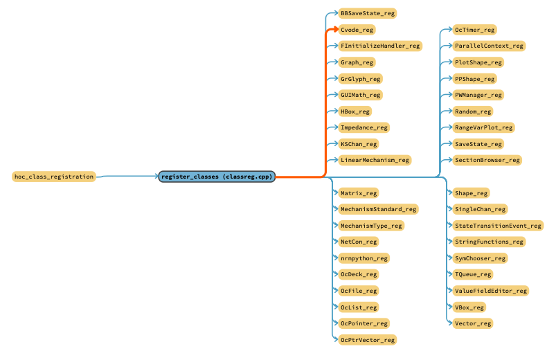
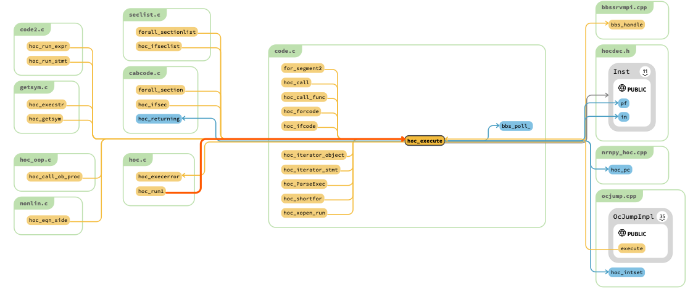
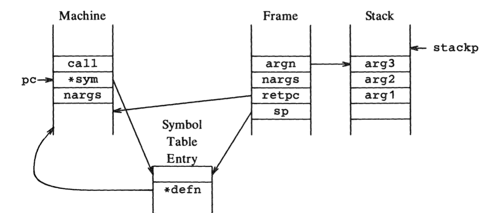
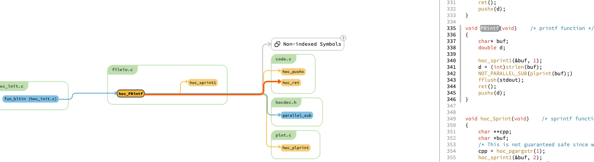

HOC Interpreter
-
HOC Interpreter - executing the machine
HOC Interpreter example - printf
Background
Quote from Wikipedia
“HOC, an acronym for High Order Calculator, is an interpreted programming language that was used in the 1984 book The Unix Programming Environment to demonstrate how to build interpreters using Yacc.”
Source: https://en.wikipedia.org/wiki/Hoc_(programming_language)
This books stands as ground base for the implementation of HOC Interpreter in NEURON. Points of interest are:
chapter 8 → details about HOC design and development, done in 6 stages. It goes incrementally from a simple calculator to base HOC language.
appendix 2 → HOC manual
appendix 3 → code listing of the last stage (hoc6)
Source Code
We can distinguish several folders under ‘src’:
‘src/oc’ → Source code for the base HOC interpreter
‘src/ivoc’ → GUI-related code but also general purpose data structures like Vector, List or File (developed in C++)
‘src/nrnoc’ → NEURON-related HOC code
‘src/nrniv’ → modern NEURON, as it is used today; contains several C++ neuron-related additions.
Entry point
Main entry point called ‘ivocmain’ is found in ‘ivocmain.cpp’ located under ‘src/ivoc’.

This will call ‘ivocmain_session()’ with parameter ‘start_session’ set to 1 that will effectively be dropping into the HOC Interpreter via ‘hoc_main1()’:
int ivocmain (int argc, const char** argv, const char** env) {
return ivocmain_session(argc, argv, env, 1);
}
int ivocmain_session (int argc, const char** argv, const char** env, int start_session) {
.........
hoc_main1(our_argc, our_argv, env);
.........
}
HOC Grammar
With respect to the HOC grammar we have:
‘src/oc/parse.ypp’ → HOC language is defined thanks to bison/yacc; this file holds actual HOC grammar
The grammar consists of token definitions, left-right precedence setup, grammar rules (i.e. expressions like assignments) and actions; these actions represent code blocks triggered when rules have been recognised.
HOC also provides functions and procedures. Grammar wise, the difference is that functions are treated as expressions whereas procedures are statements. Technically, a function will return a value and a procedure will not.
Given different depth of rules, parsing makes use of a stack where we normally push operands and operators. These are basically symbols(Symbol) or machine instructions tied to grammar actions(Inst).
HOC uses an interpreter data stack, an instruction machine and a separate function/procedure (nested) call stack (combined together as a stack machine).
Therefore grammar parsing type is defined as:
%union { /* stack type */ Symbol *sym; /* symbol table pointer */ Inst *inst; /* machine instruction */ int narg; /* number of arguments */ void* ptr; }which will generate
typedef union YYSTYPE
Parsing relies on a lexer function that performs input tokenisation, called ‘yylex()’ (implemented in ‘src/oc/hoc.cpp’).

It “communicates” with the parser (yyparse()) via a variable of the same type as the stack: ‘YYSTYPE yylval’.
As mentioned earlier, tokens are defined in the grammar. Each of them have a type that corresponds to what we have in YYSTYPE, for example:
%token <sym> LOCALOBJ AUTOOBJ %token <narg> ARG NUMZERO ARGREF %token <ptr> INTERNALSECTIONNAME PYSEC PYSECNAME PYSECOBJ %type <inst> expr stmt asgn prlist delsym stmtlist strnasgn
means LOCALOBJ is of type `Symbol *sym; /* symbol table pointer */`. Grammar rules can also be mapped to a type, for example strnasgn is of type `Inst *inst; /* machine instruction */`.
‘src/oc/hoc.h’ → includes two headers
‘redef.h’ → some HOC redefinitions
‘hocdec.h’ → here we find global data structures.
HOC is context aware, so to that end we have a symbol table where we put new variables but also keywords, builtins and other constructs (see HOC Initialisation). We find the Symbol struct here:
typedef struct Symbol { /* symbol table entry */ char *name; short type; short subtype; /* Flag for user integers */ short public; /* flag set public variable */ short defined_on_the_fly;/* moved here because otherwize gcc and borland do not align the same way */ union { int oboff; /* offset into object data pointer space */ double *pval; /* User defined doubles - also for alias to scalar */ HocStruct Object* object_; /* alias to an object */ char *cstr; /* constant string */ double *pnum; /* Numbers */ int *pvalint; /* User defined integers */ float *pvalfloat; /* User defined floats */ int u_auto; /* stack offset # for AUTO variable */ double (*ptr)(); /* if BLTIN */ Proc *u_proc; struct { short type; /* Membrane type to find Prop */ int index; /* prop->param[index] */ }rng; HocStruct Symbol **ppsym; /* Pointer to symbol pointer array */ HocStruct Template *template; HocStruct Symbol* sym; /* for external */ } u; unsigned s_varn; /* dependent variable number - 0 means indep */ Arrayinfo *arayinfo; /* ARRAY information if null then scalar */ HocSymExtension* extra; /* additions to symbol allow compatibility with old nmodl dll's */ HocStruct Symbol *next; /* to link to another */ } Symbol;
Union u is used to hold actual value of the symbol given its type.
We also have Inst, which represents the data type of a machine instruction and is tied to function pointers of different types that correspond to different functions or grammar actions:
typedef int (*Pfri)(void); typedef void (*Pfrv)(void); typedef double (*Pfrd)(void); typedef struct Object** (*Pfro)(void); typedef const char** (*Pfrs)(void); typedef int (*Pfri_vp)(void*); typedef void (*Pfrv_vp)(void*); typedef double (*Pfrd_vp)(void*); typedef struct Object** (*Pfro_vp)(void*); typedef const char** (*Pfrs_vp)(void*); typedef union Inst { /* machine instruction list type */ Pfrv pf; Pfrd pfd; Pfro pfo; Pfrs pfs; Pfrv_vp pfv_vp; Pfrd_vp pfd_vp; Pfro_vp pfo_vp; Pfrs_vp pfs_vp; HocUnion Inst *in; HocStruct Symbol *sym; void* ptr; int i; } Inst;
The interpreter data stack has the following type StackDatum:
using StackDatum = std::variant<double, // old Datum::val Symbol*, // old Datum::sym int, // old Datum::i Object**, // old Datum::pobj Object*, // old Datum::obj char**, // old Datum::pstr double*, // old Datum::pval std::nullptr_t>; // old STKOBJ_UNREF
‘src/oc/code.cpp’ → here we find the stack machine definitions and routines that manipulate it, and as well as functions tied to different functionalities or grammar actions (HOC routines), like for example call() that will perform a function call.
static std::vector<StackDatum> stack{}; // the data stack #define NPROG 50000 Inst *prog; /* the machine */ Inst *progp; /* next free spot for code generation */ Inst *pc; /* program counter during execution */ Inst *progbase; /* start of current subprogram */ Inst *prog_parse_recover; /* start after parse error */ int hoc_returning; /* 1 if return stmt seen, 2 if break, 3 if continue */ /* 4 if stop */ namespace nrn::oc { struct frame { /* proc/func call stack frame */ Symbol* sp; /* symbol table entry */ Inst* retpc; /* where to resume after return */ StackDatum* argn; /* n-th argument on stack */ int nargs; /* number of arguments */ Inst* iter_stmt_begin; /* Iterator statement starts here */ Object* iter_stmt_ob; /* context of Iterator statement */ Object* ob; /* for stack frame debug message */ }; } // namespace nrn::oc using Frame = nrn::oc::frame; #define NFRAME 512 /* default size */ static Frame *frame, *fp, *framelast; /* first, frame pointer, last */
The important thing to note here is the Frame structure, used for functions and procedures. They are installed in a symbol table and have a make us of a machine instruction retpc used to know where to return after execution.
Arguments come in variably like $1, $2 and so on, and the way we incorporate them is by pointing to the last one on the stack (StackDatum *argn) and passing int nargs.
‘src/oc/symbol.cpp’ → defines several symbol tables and utility functions to install and lookup symbols (see HOC Initialisation)
typedef struct Symlist {
HocStruct Symbol *first;
HocStruct Symbol *last;
}Symlist;
Symlist *hoc_built_in_symlist = (Symlist *)0; /* keywords, built-in functions, all name linked into hoc. Look in this list last */
Symlist *hoc_top_level_symlist = (Symlist *)0; /* all user names seen at top-level (non-public names inside templates do not appear here) */
Symlist *symlist = (Symlist *)0; /* the current user symbol table: linked list */
Symlist *p_symlist = (Symlist *)0; /* current proc, func, or temp table */
/* containing constants, strings, and auto */
/* variables. Discarding these lists at */
/* appropriate times prevents storage leakage. */
‘src/oc/hoc_oop.cpp’ → holds HOC functions providing support for OOP
HOC Initialization
Argument parsing
Before HOC interpreter initialisation, ‘ivocmain_session()’ takes into account different options passed down from command line arguments and sets variables accordingly.
HOC-interpreter importance wise, we have:
‘NSTACK’→ HOC interpreter stack space
‘NFRAME’ → number of frames available.
options:\n\ ....... -NSTACK integer size of stack (default 1000)\n\ -NFRAME integer depth of function call nesting (default 200)\n\ ........
Default values are used if user does not supply them → in ‘src/oc/code.cpp’. We often need to specify a higher NFRAME (i.e. 1000 when we do morphology loading as that tends towards deeper function call nesting when parsing).
These values are checked systematically when we use the stack or frames for procedures and functions (everything is in ‘src/oc/code.cpp’,); the actual space allocation for HOC stack and frames is done in ‘hoc_init_space()’.
Interpreter initialisation
‘hoc_main1_init()’ is in charge of the HOC interpreter initialisation. In the following image we can see ‘hoc_main1()’ is also a caller; this is the hoc interpreter part taking input line by line and executing it, discussed in next section.

Most of the initialisation is actually handled through ‘hoc_init()’ 
‘hoc_init()’ will perform the following
call ‘hoc_init_space()’ to allocate space for HOC interpreter stack and frames
install symbols with the help of ‘hoc_install’ (alias of ‘install()’ function implemented in ‘src/oc/symbol.cpp’):
keywords like : if, else, proc, localobj and so on
constants like: PI, GAMMA, FARADAY and so on
builtin HOC functions like: sin(), cos(), sqrt(), xopen(), sscanf(), execute(), load_file(), nrnversion() and so forth


install some variable symbols using ‘hoc_install_var()’ defined in ‘src/oc/symbol.cpp’
call ‘hoc_spinit()’ implemented in ‘src/oc/hocusr.cpp’, which will
hoc_install() user variables ( like float/double/integer, scalars, arrays, vectors)
hoc_install() user functions (like pt3dadd(), finitialize(), psection() and so on)
call ‘hoc_last_init()’ to finalise setup, including:
create NrnThreads
hoc_install() neuron related variables ( t, dt, v, i_membrane_) and user properties ( nseg, L, rallbranch, Ra)
finish memory allocations for different neuron variables
call modl_reg() and mswin_load_dll() to load external mechanisms from mech library
call ‘hoc_class_registration()’ implemented in ‘src/ivoc/classreg.cpp’ which will register classes found in different parts of the source tree, like:
List, Vector, Matrix and so on, classes from ‘src/ivoc/’
Shape, BBSaveState and so on, classes from ‘src/nrniv’

HOC Interpreter - executing the machine
As pointed out in previous section, ‘hoc_main1()’ launches the interpreter and executes different hoc commands either line by line from input file or from prompt.
This is handled by the next routine:
HOC interpreter main routine
while (moreinput())
hoc_run1();
return 0;
Whereas ‘hoc_run1()’ will perform parsing (ultimately via bison generated ‘yyparse()’), which will then point to the start machine instruction Inst that is passed on to execution via execute (hoc_execute() redef):
for (initcode(); hoc_yyparse(); initcode())
{
execute(progbase)
}

HOC Interpreter example - printf
When a function (or even a procedure) is called we have:
arguments parsed (and eventually computed) pushed to the interpreter data stack
the interpreter machine will have
call opcode → this is linked to the call() function implemented in ‘src/oc/code.cpp’
sym holding the symbol table pointer for the function
nargs holding the number of arguments passed to the function
a new Frame is pushed onto the frame stack, containing
argn → pointer to interpreter stack of the last argument
nargs → number of arguments
retpc → where to return after the function call
sp → symbol table pointer of the printf

How does this map to parse.ypp grammar? Corresponding part is :
expr:
.......
| function begin '(' arglist ')'
{ $$ = $2; code(call); codesym($1); codei($4); PN;}
Here we notice call opcode that was pushed to the interpreter machine, together with the sym of called function and the number of args via codei call.
So given the following HOC call:
oc>printf("%s equals %d", "one plus two", 1+2)
the parsing will parse the arguments and the interpreter will perform call(). At this point, program counter pc points to the printf symbol table entry and just after we have the number of arguments nargs. We now push and setup a new Frame:
// call a function
void hoc_call() {
int i, isec;
Symbol* sp = pc[0].sym; /* symbol table entry for printf */
if (++fp >= framelast) {
--fp;
execerror(sp->name, "call nested too deeply, increase with -NFRAME framesize option");
}
fp->sp = sp;
fp->nargs = pc[1].i;
fp->retpc = pc + 2; // This is where we return to after the printf call
...
fp->argn = &stack.back(); // pointer to the last argument
By inspecting the frame we notice:
(lldb) p *fp
(Frame) $1 = {
sp = 0x00006000017092c0
retpc = 0x000000010038c060
argn = Active Type = double
nargs = 3
iter_stmt_begin = nullptr
iter_stmt_ob = nullptr
ob = nullptr
}
(lldb) p *fp->sp
(Symbol) $2 = {
name = 0x0000600000014480 "printf"
type = 280 // this is the type of the symbol, which corresponds to a builtin function: FUN_BLTIN = 280
subtype = 0
cpublic = 0
defined_on_the_fly = 0
u = {
oboff = 2163136
pval = 0x00006000002101c0
object_ = 0x00006000002101c0
cstr = 0x00006000002101c0 "\U00000010\U0000001a\xea"
pnum = 0x00006000002101c0
pvalint = 0x00006000002101c0
pvalfloat = 0x00006000002101c0
u_auto = 2163136
ptr = 0x00006000002101c0
u_proc = 0x00006000002101c0 // this is the active member
rng = (type = 448, index = 24576)
ppsym = 0x00006000002101c0
ctemplate = 0x00006000002101c0
sym = 0x00006000002101c0
}
s_varn = 0
arayinfo = nullptr
extra = nullptr
next = 0x0000600001709300
}
(lldb) p *fp->argn
(StackDatum) $3 = Active Type = double {
Value = 3 // value of the last argument (1+2) has already been computed
}
call() will continue on to check the symbol, which tells us we are calling a builtin function (FUN_BLTIN = 280, see fp above), and call its function pointer mapped to hoc_PRintf:
if (sp->type == FUN_BLTIN || sp->type == OBJECTFUNC || sp->type == STRINGFUNC) {
// Push slots for auto
for (auto i = 0; i < sp->u.u_proc->nauto; ++i) {
push_value(0.0);
}
(*(sp->u.u_proc->defn.pf))(); /* this is where we call the printf function */
if (hoc_errno_check()) {
hoc_warning("errno set during call of", sp->name);
}
}
oc>printf("%s equals %d", "one plus two", 1+2)
Process 15255 stopped
* thread #1, queue = 'com.apple.main-thread', stop reason = breakpoint 1.1
frame #0: 0x0000000100e7cba0 libnrniv.dylib`hoc_call() at code.cpp:1403:10
1400 for (auto i = 0; i < sp->u.u_proc->nauto; ++i) {
1401 push_value(0.0);
1402 }
-> 1403 (sp->u.u_proc->defn.pf)();
1404 if (hoc_errno_check()) {
1405 hoc_warning("errno set during call of", sp->name);
1406 }
Target 0: (nrniv) stopped.
(lldb) s
Process 15255 stopped
* thread #1, queue = 'com.apple.main-thread', stop reason = step in
frame #0: 0x0000000100ea1a18 libnrniv.dylib`hoc_PRintf() at fileio.cpp:316:5
313 char* buf;
314 double d;
315
-> 316 hoc_sprint1(&buf, 1);
317 d = (int) strlen(buf);
318 plprint(buf);
319 fflush(stdout);
Target 0: (nrniv) stopped.

hoc_sprint1() will be in charge of formatting the output using the parsed arguments. Once printing is done via plprint(), a call to ret() will perform Frame clean-up, pop arguments from interpreter data stack and set program counter pc to returning point retpc:
/* common return from func, proc, or iterator */
void hoc_ret() {
// unref all the auto object pointers
for (int i = fp->sp->u.u_proc->nobjauto - 1; i >= 0; --i) {
// this is going from the deepest automatic object in the stack to the shallowest
hoc_obj_unref(hoc_look_inside_stack<Object*>(i));
}
// Pop off the autos
for (auto i = 0; i < fp->sp->u.u_proc->nauto; ++i) {
pop_value();
}
frameobj_clean(fp);
for (int i = 0; i < fp->nargs; i++) {
// pop arguments
hoc_nopop();
}
hoc_pc = fp->retpc;
--fp;
hoc_returning = 1;
}
Length of outputted string (21 here) is pushed onto the interpreter data stack. Notice hoc_returning that is set to 1 to let the stack machine know execution is done; this is how we can signal nested calls if needed (out of scope for this example).
At the end of hoc_execute() we get:
one plus two equals 3 21